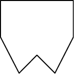

Caiu no Enem
- Uma família fez uma festa de aniversário e enfeitou o local da festa com bandeirinhas de papel. Essas bandeirinhas foram feitas da seguinte maneira: inicialmente, recortaram as folhas de papel em forma de quadrado, como mostra a Figura 1. Em seguida, dobraram as folhas quadradas ao meio sobrepondo os lados BC e AD, de modo que C e D coincidam, e o mesmo ocorra com A e B, conforme ilustrado na Figura 2. Marcaram os pontos médios O e N, dos lados FG e AF, respectivamente, e o ponto M do lado AD, de modo que AM seja igual a um quarto de AD. A seguir, fizeram cortes sobre as linhas pontilhadas ao longo da folha dobrada.

Após os cortes, a folha e aberta e a bandeirinha esta pronta.
A figura que representa a forma da bandeirinha pronta é:
-
-
 -
-
-
-
- As figuras a seguir exibem um trecho de um quebra-cabeças que está sendo montado. Observe que as peças são
quadradas e há 8 peças no tabuleiro da Figura A e 8 peças no tabuleiro da Figura B. As peças são retiradas do tabuleiro
da Figura B e colocadas no tabuleiro da Figura A na posição correta, isto é, de modo a completar os desenhos.
É possível preencher corretamente o espaço indicado pela seta no tabuleiro da figura A colocando a peça
- 1 após girá-la 90° no sentido horário.
- 1 após girá-la 180° no sentido anti-horário.
- 2 após girá-la 90° no sentido anti-horário.
- 2 após girá-la 180° no sentido horário.
- 2 após girá-la 270° no sentido anti-horário.
Disponível em: http://pt.eternityii.com. Acesso em: 14 jul. 2009.
- O polígono que dá forma a essa calçada é invariante por rotações, em torno de seu centro, de:
- 45°
- 60°
- 90°
- 120°
- 180°
Disponível em: http://www.diaadia.pr.gov.br. Acesso em: 28 abr. 2010.